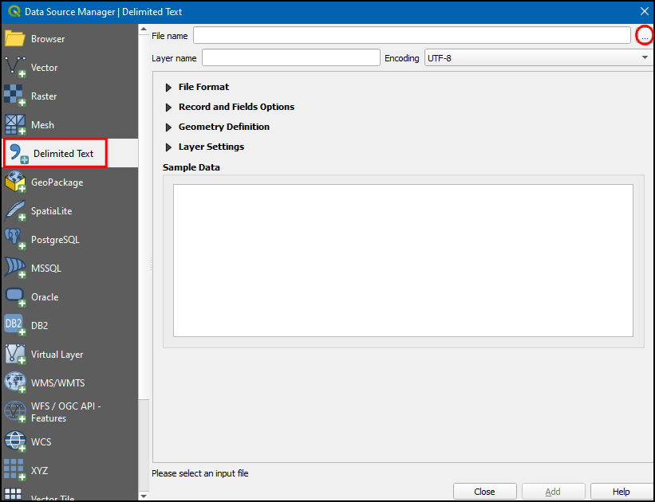
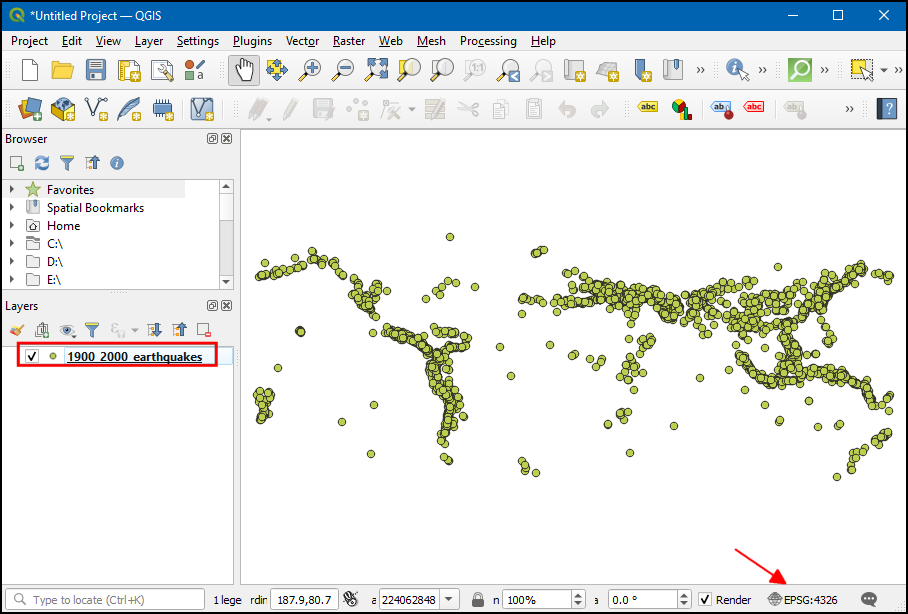

Ujaval Gandhi
Ujaval GandhiImporting Spreadsheets or CSV files (QGIS3)¶
Many times the GIS data comes in a table or in a spreadsheet. QGIS allows you to import structured text files with coordinates as a vector layer. This tutorial shows how you can use the Data Source Manager to import Delimited Text files.
Overview of the task¶
We will be importing a text file with earthquake locations in the tab-separated values (TSV) format to QGIS and create a points layer.
Get the data¶
For this tutorial we will download a dataset of earthquakes between 1900-2000 from NOAA’s National Geophysical Data Center produces a great dataset of all significant earthquakes since 2150 BC. Visit the NOAA NCEI portal and enter Min as
1900and Max as2000. This will return all earthquake incidents that occurred and were recorded by NOAA between those years. For other specific results, you can filter with different parameters. Click Search.

As a result, we got 2594 earthquake incidents. Click on the Download TSV icon.

For convenience, you may directly download a copy of the above datasets from the link below:
earthquakes-2023-09-12_17-19-15_+0530.tsv
Data Source [NCEI]
Procedure¶
Examine your tabular data source. The downloaded earthquake database contains the
LatitudeandLongitudefields indicating the location of the earthquake epicenter and other related attributes. We will use these fields to import the file as a point layer. Open the data in a text editor such as Notepad/TextMate to view the contents. You will see that a TAB separates each field.

Note
If you have a spreadsheet, use Save As function in your program to save it as a Tab Delimited File or a Comma Separated Values (CSV) file.
QGIS comes with a unified data manager that allows you to load all the various supported data formats. Click the Open Data Source Manager button on the Data Source Toolbar. You may also use Ctrl + L keyboard shortcut.

In the Data Source Manager dialog box, switch to the Delimited Text tab. Click the … button next to the File name.

Depending upon the operating system, you may or may not view the file at the downloaded location. In File formats, switch to
All files (*; *.*)to view the tsv file.

Now you will see the downloaded file. Select that and click Open.

In the Data Source Manager dialog box, the path to file will be available in File Name. Change the Layer name to
1900_2000_earthquakes. In the File format section, select Custom delimiters and checkTab. In the Geometry definition section, choose Point coordinates. By default X field and Y field values will be auto-populated if it finds a suitable name field in the input. In our case, they areLongitudeandLatitude. You may change it if the import selects the wrong fields. You can leave the Geometry CRS to the defaultEPSG:4326 - WGS 84CRS. If your file contains coordinates in a different CRS, you could select the appropriate CRS here. Click Add.
Note
It is easy to get confused between X and Y coordinates. Latitude specifies the north-south position of a point and hence it is a Y coordinate. Similarly Longitude specifies the east-west position of a point and it is a X coordinate.
You will now see that the data will be imported and displayed in the QGIS canvas as a new layer called
1900_2000_earthquakeswith CRSEPSG:4326.

If you want to give feedback or share your experience with this tutorial, please comment below. (requires GitHub account)